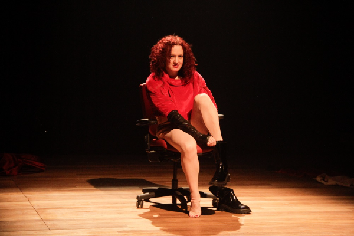
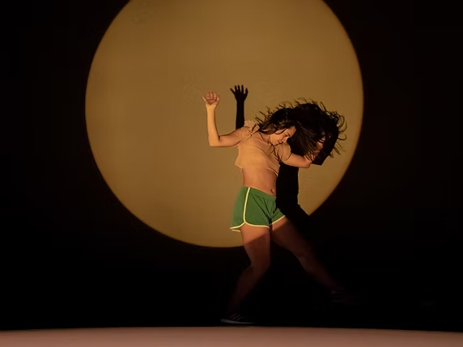

2022
Trava Bruta · circulação
Festival de Teatro de Curitiba, 30ª edição · MITbr – Plataforma Brasil, dentro da MITsp, Teatro João Caetano, 8 e 9 de junho · temporada no Sesc Belenzinho, São Paulo, 22 de julho a 7 de agosto.
O amor é uma invenção da Nasa pra vender travesseiro
música
Lançamento do álbum e do show de mesmo nome, que desde então vem circulando em diversas cidades brasileiras
Divã das Divas
drag queen
Temporada especial do Consultório Sentimental.
Qual é a graça?
escrita
Oficina.
Psicodrags
drag queen
Mostra Oficial do Festival de Curitiba.

Fotografia: Alessandra Haro
Fronterizas(colaborador dramatúrgico)
Trabalho da artista Mari Paula. Participei do trabalho totalmente a distância, eu no Brasil, ela em Madri, Espanha. A partir dos interesses que ela já tinha, fui propondo métodos para transformar aquelas ideias em material de cena.
maripaula.com/en/fronterizas
17